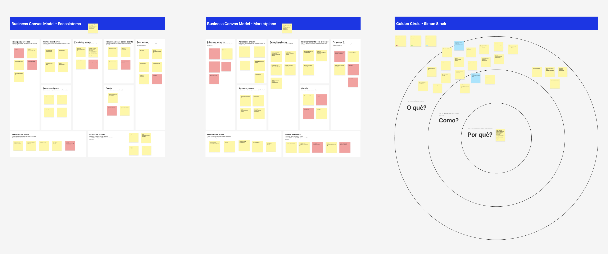
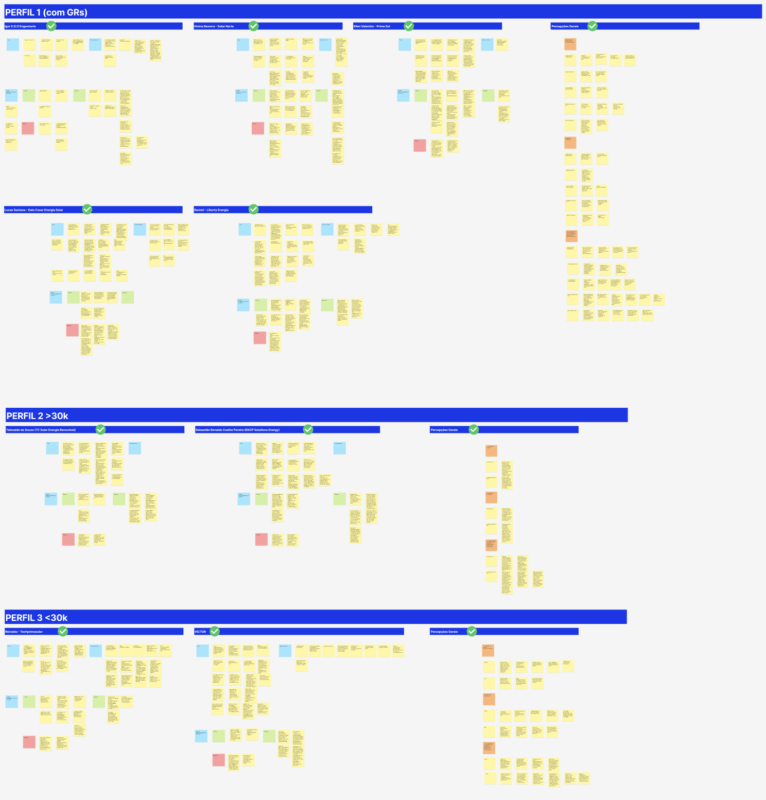
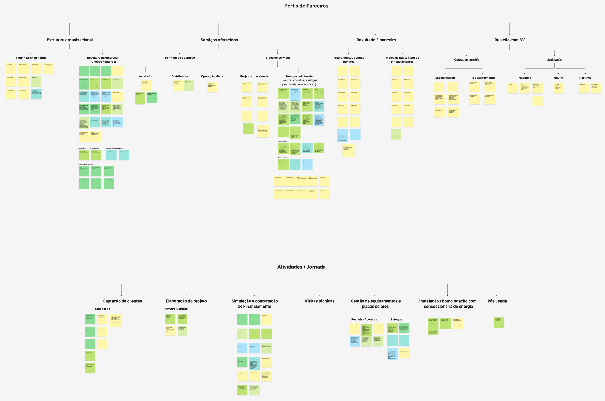
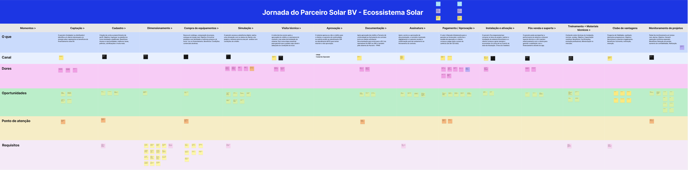
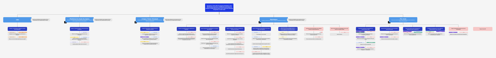
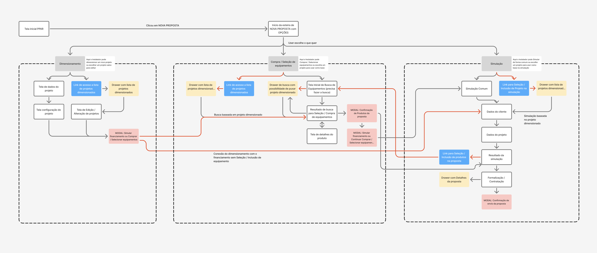

2025/2026
Banco BV
Meu trabalho neste projeto teve como foco coordenar e orquestrar todas as iniciativas necessárias para o desenvolvimento do produto Ecossistema Solar BV. Um produto novo para um parceiro novo: o integrador solar que chegou ao BV junto com a aquisição da Meu Financiamento Solar e que não se encaixava no perfil dos correspondentes bancários que o banco já atendia.
- Realização de entrevistas
- Pesquisas quali e quanti
- Construção de personas
- Construção de jornada
- Arquitetura da informação
- Prototipação
- Testes de usabilidade
Tags do projeto:
Processo de discovery e design de experiência
Cenário
O Banco BV oferecia apenas uma experiência B2B de simulação para seus parceiros correspondentes bancários (COBANs). Ao adquirir a Meu Financiamento Solar, o banco herdou uma nova camada de parceiros — os integradores solares — que não se encaixavam no perfil dos parceiros existentes. Era preciso repensar o formato da plataforma oferecida a esses novos parceiros: explorar possibilidades, mapear oportunidades de mercado e entender a fundo quem era esse novo parceiro, suas necessidades e dores.
Objetivo
Construir uma plataforma para os novos parceiros que migraram da ferramenta Meu Financiamento Solar para o BV, levando em conta suas necessidades, dores e anseios.
Como o trabalho foi organizado
-
01
Descoberta
Pesquisa quali e quanti, entrevistas de profundidade e observação com parceiros de diferentes portes e regiões.
-
02
Definição
Síntese da pesquisa, personas, jornada, arquitetura e árvore de oportunidades para priorizar o produto.
-
03
Validação
Protótipos navegáveis, testes de usabilidade e rodadas de validação com o time e com parceiros.
-
04
Entrega
Product design, especificação e acompanhamento do desenvolvimento até o produto no ar.
Desenho do modelo de negócio
Com o time de gerentes executivos e PM, desenhamos o modelo de negócio do produto usando Business Canvas Model e Golden Circle. O exercício alinhou o que o parceiro precisa, como o BV entrega e por que isso importa — antes de qualquer tela.

Entrevistas quali e pesquisa quanti
Conduzimos entrevistas em profundidade e uma pesquisa quantitativa com integradores solares de diferentes portes e regiões. A síntese virou um mapa de afinidades: dores, ganhos, objeções e o vocabulário do parceiro.

Mapeamento dos perfis
A partir das entrevistas, organizamos os perfis de parceiro por estrutura organizacional, serviços oferecidos, modelo de trabalho e porte — a base para as personas e para as decisões de produto.

Desenho de jornada
Mapeamos a jornada do parceiro Solar BV do primeiro contato à simulação e ao pós-venda, com emoções, canais e pontos de atrito em cada etapa.

Rodada de árvore de oportunidades
Com o time, transformamos os achados em uma árvore de oportunidades — do objetivo de negócio às soluções — para priorizar o que entraria na primeira versão do produto.

Estudo de fluxo
Desenhamos o fluxo completo do canal, do acesso e cadastro do parceiro à criação do projeto, simulação e envio da proposta, prevendo estados de erro, permissões e caminhos alternativos.

Prototipação
As telas abaixo são do protótipo navegável do canal digital Solar BV — o que o integrador precisa em um só lugar: projetos dimensionados, simulações, configuração do telhado, seleção de kits e acompanhamento das propostas.
Aprendizados
Entender um parceiro que não era o usuário original do banco foi o maior desafio — e o que mais mudou o produto. A árvore de oportunidades e o canvas ajudaram a manter negócio, produto e tecnologia olhando para o mesmo problema.
Aprendi que, em um ecossistema, a experiência do parceiro começa muito antes da tela: no modelo de negócio, na jornada comercial e na relação com o distribuidor.